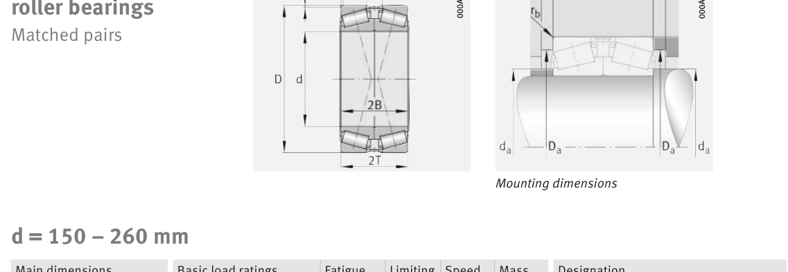

Original catalogue drawing - FAG Schaeffler HR 1, page 634

Scanned from the manufacturer catalogue page listing this part number. All part numbers printed on that table share the same drawing.
Scale cross-section
Blue = inner / outer ring, yellow = rolling element. Drawn to scale from this part's own
dimensions for selection reference only - not a manufacturing or assembly drawing.
Dimension table (mm / inch)
Symbol
Dimension
mm
inch
d
Bore diameter
180
7.0866
D
Outside diameter
320
12.5984
Notes
Weights are given in kg. Load ratings are shown in both the original catalogue units and the converted value (1 N = 0.2248 lbf). Data is provided for selection reference only - confirm against the latest official catalogue before ordering.
Main dimensions
Bore d (mm)
180
Outside dia. D (mm)
320
Load ratings & speeds
Basic dynamic load rating Cr (lbs)
458610
Basic static load rating Cor (lbs)
741870
Basic dynamic load rating Cr (N)
2.04e+06
Basic static load rating C0r (N)
3.3e+06
Basic dynamic axial rating Ca (N)
10
Fatigue limit load Cur (N)
425000
Factor e
0.45
Factor Y0
1.47
Limiting speed nG (rpm)
2,270
Reference speed nB (rpm)
1,020
Weight
Weight (kg)
62.3
Mounting dimensions (fillets / shoulders)
Shaft shoulder da (mm)
204
Housing shoulder Da (mm)
267
Fillet rb max (mm)
4
Bearing life (ISO 281 basic rating life)
C / P
Equivalent load P (N)
L10 (106 rev)
L10h at 700 rpm
4
510,000
102
2,419
6
340,000
392
9,345
8
255,000
1,024
24,381
10
204,000
2,154
51,296
15
136,000
8,323
198,178
Basic rating life per ISO 281: L10 = (C/P)10/3 with C = 2,040,000 N. Hours = L10 x 106 / (60n). Life-modification factors for lubrication, contamination and temperature (aISO) are not included.
Source & traceability
Brand
FAG
Source catalogue
FAG / Schaeffler Rolling Bearings HR 1
Catalogue page
p.634 (dimensions)
Load ratings in newtons, fatigue limit load Cur, limiting speed nG and reference speed nB.
Send us the quantity you need and we will come back with price and
lead time, normally within 24 hours. Equivalent parts from other brands can be quoted at the same time.